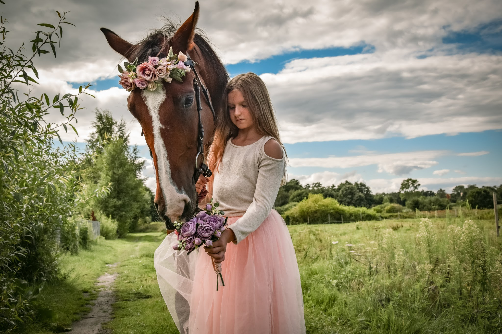
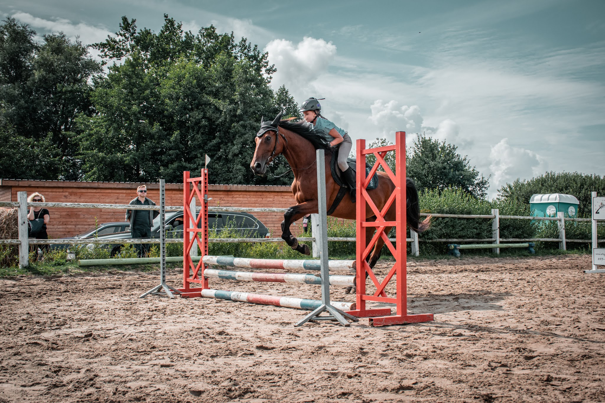
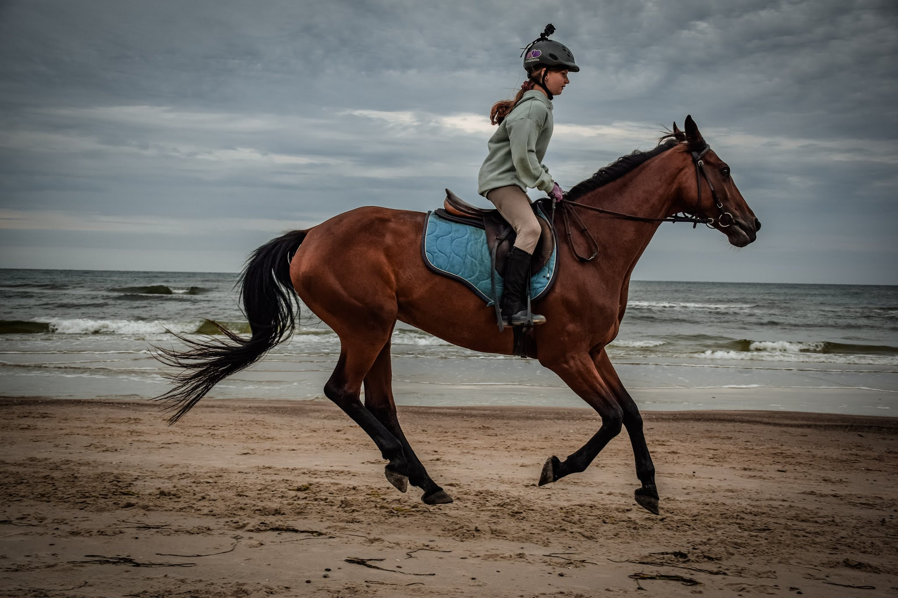

Jazda konna to jedna z najstarszych i najbardziej szlachetnych form aktywności człowieka. Od wieków konie towarzyszyły ludziom w pracy, na polach bitew, a także w czasie rozrywki i wypoczynku. Dziś jazda konna to sport, który łączy tradycję z nowoczesnością, pozwalając nie tylko na doskonalenie umiejętności fizycznych, ale także na budowanie wyjątkowej więzi z naturą i zwierzęciem. Każda chwila spędzona w siodle to lekcja cierpliwości, pokory i współpracy.
jak zapewne już widzieliście w telewizji czy na telefonach, są różne dyscypliny i rodzaje jazdy. wyróżniające się i najbardziej znane, po koleji to; Skoki przez przeszkody, ujeżdżenie, woltyżerka (akrobacje), cross (skoki przez naturalne przeszkody, najczęściej jakieś kłody na wysokości, woda czy płoty z trawy), następne może być powożenie, czyli jazda z bryczką czy western. Tutaj można skończyć nawet na pokazach czy licytacji. Więc dyscyplin jest mnóstwo a każda z nich uczy cierpliwości i wymaga dużo pracy, jak i z sobą tak i z koniem.
Oto definicje najczęściej użwyanych słów, których często nie rozumiemy w dyscyplinach
Ujeżdżenie - to klasyczna forma jazdy, która skupia się na precyzji ruchów konia i harmonii między nim a jeźdźcem.
Skoki przez przeszkody - dynamiczna i emocjonująca dyscyplina, w której konie pokonują różnorodne przeszkody na torze.
Western - styl inspirowany jazdą kowbojską, popularny zwłaszcza w Stanach Zjednoczonych, charakteryzuje się swobodą i dużym komfortem dla konia i jeźdźca.
teren - jazda w plenerze, najczęściej w lasach, polach czy górach, pozwala na kontakt z naturą i odpoczynek od miejskiego zgiełku.
Zacznijmy od tego, co to jest PZJ? PZJ inaczej Polski Związek Jeździecki jest to organizacja zrzeszająca zawodnikó,trenerów,sędziów i działaczy poslkiego jeżdziectwa.
W Polsce istnieje system odznak jeździeckich, które są potwierdzeniem umiejętności jeźdźca. Pierwszym krokiem jest zdobycie odznaki Jeżdżę Konno, która wymaga umiejętności osiodłania konia, podstawowej anatomi oraz podstawowych chodów. Kolejną do zdania mamy Brązową Odznakę Jeździecką, która wymaga opanowania podstaw jazdy oraz wiedzy teoretycznej o koniach. Następnie można przystąpić do egzaminu na Srebrną Odznakę, który jest bardziej wymagający i skupia się na wyższych umiejętnościach jeździeckich, takich jak skoki przez przeszkody. Ostatnim etapem jest Złota Odznaka, która świadczy o profesjonalnym poziomie jeździeckim. Zdobywanie odznak to świetna motywacja do rozwijania swoich umiejętności i pogłębiania wiedzy.
Jazda konna to nie tylko sport, ale również terapia. Regularna aktywność w siodle wzmacnia mięśnie głębokie, poprawia postawę ciała i równowagę. Jest to szczególnie korzystne dla osób z problemami kręgosłupa lub słabą koordynacją. Ponadto kontakt z końmi działa kojąco na układ nerwowy – obniża poziom stresu, poprawia nastrój i uczy cierpliwości. Właśnie dlatego jazda konna często wykorzystywana jest w hipoterapii, pomagając osobom z różnymi schorzeniami zarówno fizycznymi, jak i psychicznymi.
chcesz się dowiedzieć więcej o przygotowaniach do jazdy konnej? sprawdź szczegóły o odpowiednim stroju.,
 